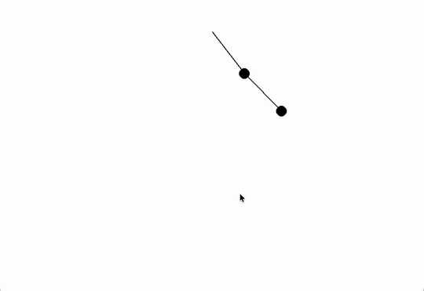
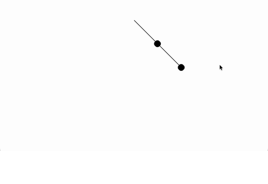
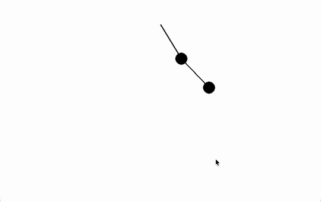

I built three separate Pygame GUIs for the same double pendulum, each wired to a different integrator. I was still in Pre-Calc when I started, so I had to teach myself derivatives and ODEs as I went. Every frame logged to CSV through EnergyLogger — about 18,000 rows total — and I used the energy drift plots to judge which method was lying to me the least. Dr. Lena mentored the project at ESD.



Each clip is 10 seconds of the Pygame GUI after startup, cropped to the plot area. Same initial conditions across all three integrators.
Two pendulums chained together. Small changes in starting angle send the paths apart fast — that's what made this worth simulating instead of solving by hand.
θ₂̈ = f(θ₁, θ₂, θ̇₁, θ̇₂, m₁, m₂, L₁, L₂, g)
The equations are derived from the Lagrangian formulation and express angular acceleration of each arm as a function of all state variables — angles, velocities, masses, lengths, and gravity.
If the simulation is working, total energy should stay flat. When it doesn't, you can see exactly which integrator is adding or bleeding energy — that was my main way of comparing Euler, RK4, and RKN.
PE = m₁gy₁ + m₂gy₂
Initial conditions for all three simulations: θ₁ = θ₂ = 45°, ω₁ = ω₂ = 0 (starting from rest). m₁ = m₂ = 1 kg, g = 9.8 m/s².
k₂ = h·f(xₙ + h/2, yₙ + k₁/2)
k₃ = h·f(xₙ + h/2, yₙ + k₂/2)
k₄ = h·f(xₙ + h, yₙ + k₃)
yₙ₊₁ = yₙ + (k₁ + 2k₂ + 2k₃ + k₄) / 6
Each simulation writes its full state to a CSV file every frame via EnergyLogger, then plot_Energy.py generates five diagnostic plots per method — 15 plots total across all three simulations.
Change in Energy · Theta1 (deg) · Theta2 (deg) · Omega1 (rad/s) · Omega2 (rad/s)
Timesteps: Euler — 1/60 s (frame-locked), RK4 — 0.01 s, RKN — 0.001 s (smallest step, highest accuracy).
Euler was the fastest to write and the first to show visible energy error. RK4 fixed most of that on normal timesteps. RKN was the most work to implement but matched the physics best — the equations are already second-order, so forcing them into first-order form for Euler/RK4 was extra overhead for worse results.